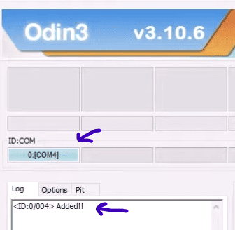
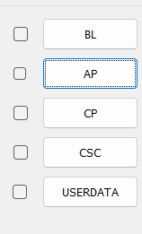
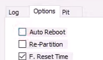

Upgrade your outdated android phone to a higher android version!
The method consist of installing an unofficial version of android, if the community had already developed a custom android ROM for your specific device model.You can break your device. Know what you doing!
I'll only go through the basics, but I do give you some cool resources for more information. So, I'm talking about something like lineageos. There are some other communities as well, but basically what they do is that they develop custom android ROMs so you can benefit from it, like installing the lates andriod version on a very old phone. I'll talk more about the benefits later.
Where to find the custom android version you want for your phone model?
Just search for it! Mostly you end up in xdaforums. For example here's the list of devices that the android 12 custom ROMs have been developed for: xda-developers.com/android-12-custom-rom, scroll to the middle of the page and you find the download links.
Now how to actually do it?
Put the actuall custom ROM zip file into your phone's internal storage.
Turn on developer mode on your phone, and also check the USB debugging.
Download Team Win Recovery Project for your specific phone model, also be carefull about the region, it should be the same as your device.
Shutdown your phone, and boot it into recovery mode. Usually it's by pushing the power and volume down button, with home button, if your phone has it of course.
When in recovery mode, press the volume up button to go for downloading custom ROM.
Connect your phone to a computer.
Open up the odin software, you have to see something like below, if you don't, try reconnecting your phone.

Click the AP button, and choose the Team Win Recovery Project file.

Go to "Options" section and uncechk the "Auto Reboot".

Click the "Start" button, finally you have to see a "PASS" messaage.
Disconnect your phone from the computer, and push the power, volume up, home (if you have it) buttons. TWRP should boot up.
Swipe to allow modifications, then press wipe, andvanced wipe, check all the options except internal storage, then swipe to wipe.
Press the back button 3 times till you get to the main menu with all the options, and press install.
Find the custom ROM zip file and press it, then swipe.
Press "Wipe cache/Dalvik".
Press "Reboot System" to boot into the new version of the android.
You tell me! There're plenty of reasons. You might wanna have the lates android on your very old phone, or you wanna experience android without google services to have more privacy, although you can install google services with "GApps" in a custom android ROM.